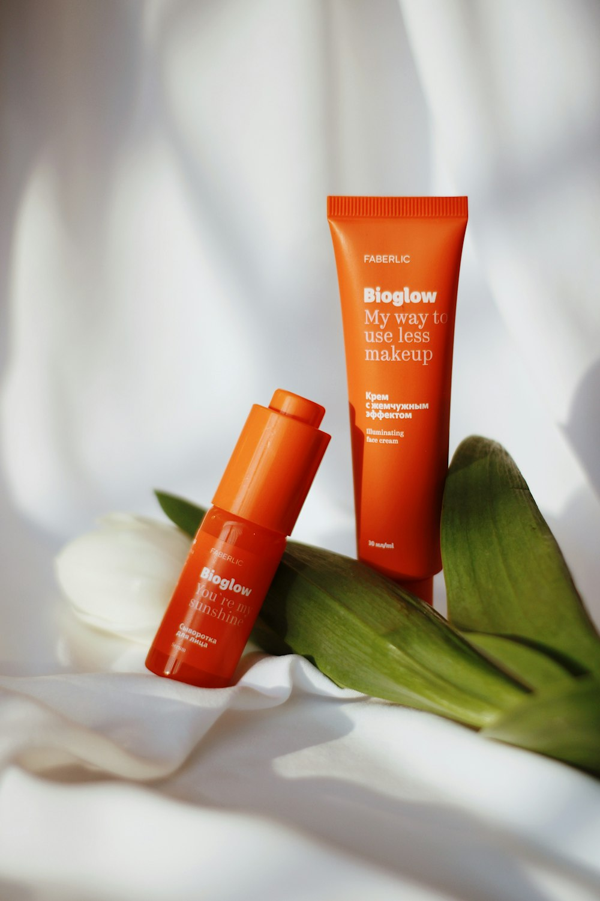
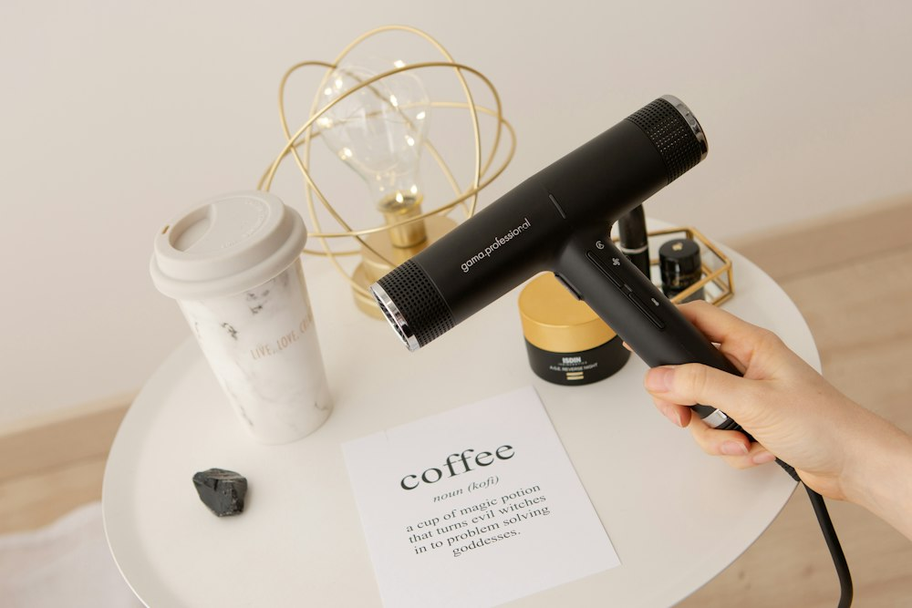
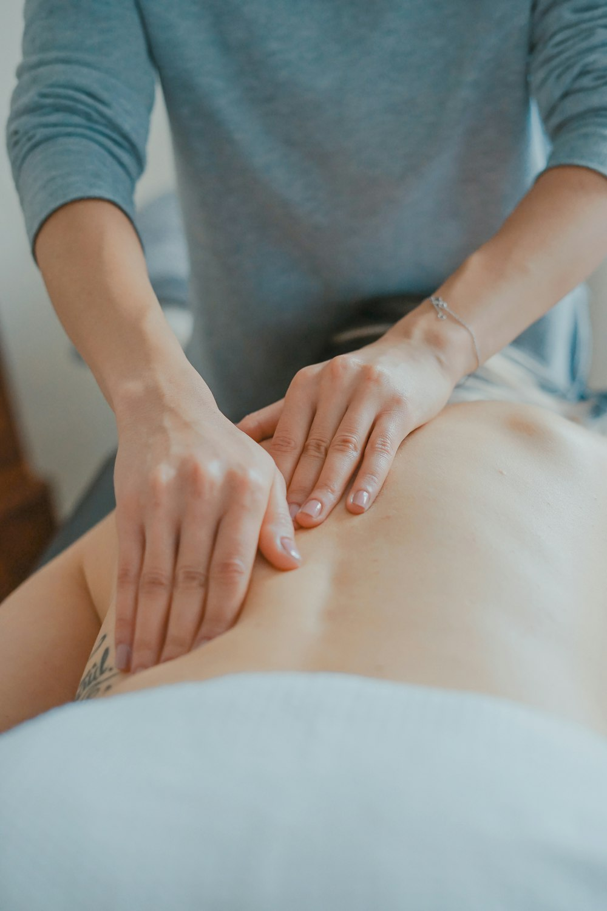
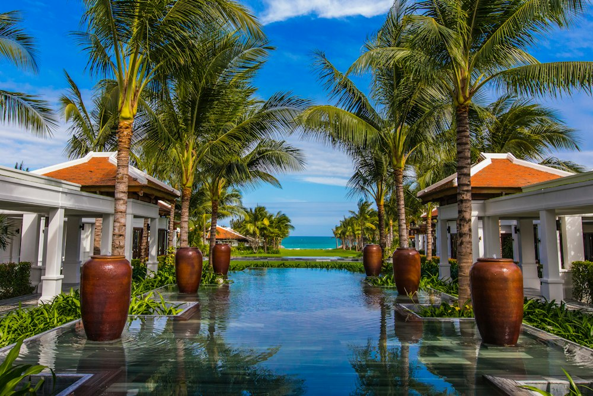
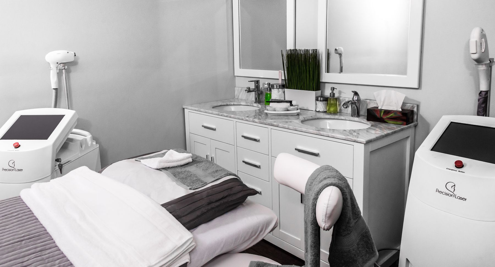
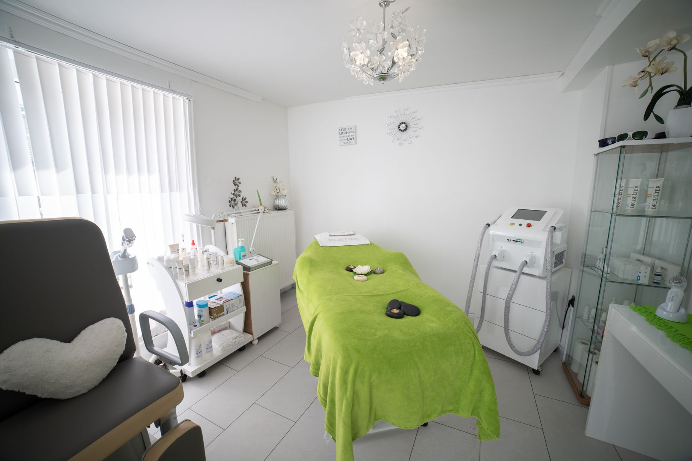
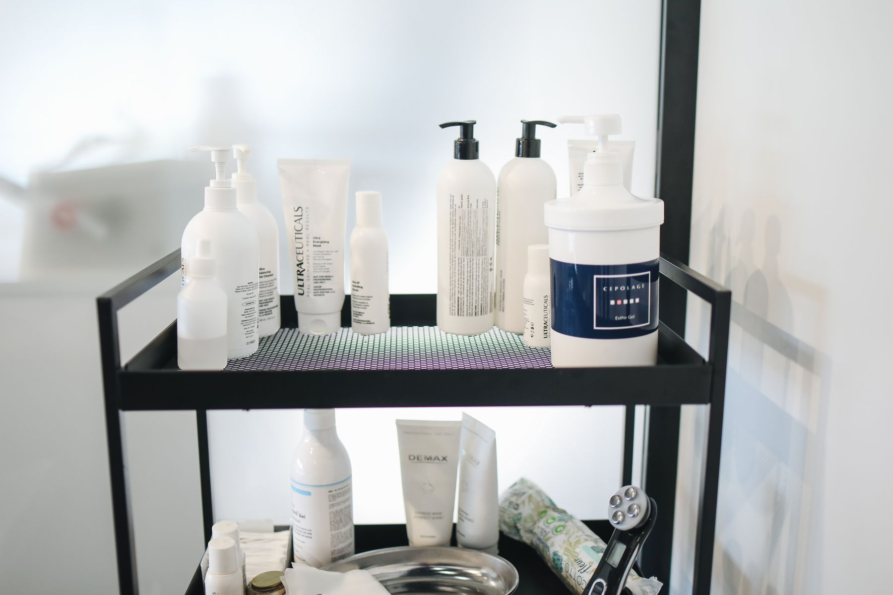

01 / Facial
Limpeza de Pele
Remoção de impurezas, esfoliação suave, extração e hidratação profunda para uma pele equilibrada, luminosa e saudável.
Saiba mais
Na Lumina, você escolhe entre limpeza de pele, design de sobrancelhas e depilação. Cada procedimento usa técnicas suaves e produtos profissionais. Atendemos em Águas Claras, Brasília.
Escolhemos a técnica e o produto conforme o seu tipo de pele. Veja os serviços mais procurados da nossa clínica em Águas Claras.
Remoção de impurezas, esfoliação suave, extração e hidratação profunda para uma pele equilibrada, luminosa e saudável.
Saiba mais
Modelagem que respeita o formato do seu rosto. Ajuste, simetria e harmonização com acabamento natural e delicado.
Saiba mais
Além dos serviços principais, oferecemos hidratação, esfoliação e avaliação estética.
Reposição de umidade e nutrientes para peles ressecadas, com máscaras e séruns adequados ao seu tipo de pele.
Remoção suave de células mortas para uma textura mais uniforme e maior absorção dos produtos.
Conversa inicial para conhecer suas necessidades e montar um plano de cuidados personalizado.
A limpeza de pele remove impurezas, células mortas, cravos e espinhas. Em Águas Claras, usamos produtos conforme o seu tipo de pele e observamos a sensibilidade da região antes da extração.
Tudo começa com uma conversa e a avaliação da pele. Em seguida, aplicamos a emoliência para amolecer os poros, fazemos a esfoliação suave e a extração com material descartável. Finalizamos com máscara calmante, sérum e protetor solar.
A pele fica com textura mais uniforme. O procedimento não agride a barreira natural da pele.
Seis etapas em cerca de 75 minutos. Cada uma prepara a pele para a próxima.

Verificamos o tipo de pele, a sensibilidade e as áreas com cravos. Escolhemos os produtos a partir dessa avaliação.
10 minutos
Removemos maquiagem e resíduos. O vapor abre os poros e facilita a extração.
10 minutos
Retiramos células mortas com esfoliante suave, conforme a tolerância da sua pele.
10 minutos
Aplicamos emoliência para amolecer os cravos e removemos o conteúdo dos poros com material descartável.
25 minutos
A máscara acalma a pele depois da extração. O sérum repõe a hidratação.
15 minutos
Aplicamos protetor solar e explicamos os cuidados dos dias seguintes.
5 minutosFotos ilustrativas do ambiente e dos produtos usados na limpeza de pele em Águas Claras.



Preços de referência em Águas Claras. O valor final depende do tipo de pele e da quantidade de extração.
| Procedimento | O que inclui | Valor |
|---|---|---|
| Limpeza de pele básicaRosto, 60 minutos | Higienização, vapor, esfoliação e hidratação | R$ 120 |
| Limpeza de pele completaRosto, 75 a 90 minutos | Protocolo básico com extração de cravos e espinhas | R$ 160 |
| Limpeza com máscara calmanteRosto, 90 minutos | Protocolo completo com máscara e sérum | R$ 185 |
| Limpeza de pele + design de sobrancelhas90 minutos | Limpeza completa e modelagem das sobrancelhas | R$ 215 |
| Sessão de manutençãoAté 30 dias após a primeira sessão | Higienização, esfoliação leve e hidratação | R$ 95 |
Os valores podem mudar conforme a avaliação da pele. Confirme no agendamento pelo WhatsApp.
A limpeza de pele remove o que obstrui os poros e ajuda a prevenir acne.
A extração retira cravos e espinhas presos nos poros. A higienização remove resíduos de maquiagem e poluição.
A esfoliação retira células mortas. A pele fica com aspecto mais liso e poros menos aparentes.
Depois da esfoliação, o sérum e o hidratante são absorvidos com mais facilidade.
A extração e os produtos escolhidos para o seu tipo de pele reduzem o excesso de sebo. O resultado varia de pessoa para pessoa.
A limpeza periódica remove o que fecha os poros e reduz a formação de novos cravos.
Você sai com instruções de hidratação e proteção solar para manter o resultado entre as sessões.
Siga as orientações da profissional depois do procedimento:
Evite banho muito quente, piscina, praia e exposição solar direta. Não use maquiagem e não manipulate a pele com as mãos.
Use protetor solar diariamente, mantenha a hidratação e evite esfoliantes agressivos até a próxima avaliação.
O design de sobrancelhas é uma técnica que combina medição, limpeza e modelagem dos fios para criar um desenho equilibrado com o formato do rosto. Em Águas Claras, nossa equipe avalia seu rosto, a densidade dos fios e o seu gosto antes de começar.
Fazemos a medição dos pontos de referência, removemos os fios excessivos com pinça ou linha e aplicamos produto calmante. Quando indicado, usamos henna para preencher falhas e definir o desenho com mais precisão.
O resultado é uma sobrancelha simétrica, com o desenho escolhido por você.
Adaptamos o método ao seu tipo de fio e à sensibilidade da sua pele.
Precisão para remover fios indesejados e desenhar contornos bem definidos.
Remove os fios com rapidez. Usamos quando a pele é sensível.
Preenchimento natural de falhas e maior definição, com efeito que pode durar até 15 dias.
O atendimento leva de 30 a 45 minutos. O desenho é definido com você antes da remoção dos fios.
Perguntamos sobre o desenho que você quer e medimos o rosto para definir início, arco e fim da sobrancelha.
5 minutosRetiramos resíduos de maquiagem e óleo da pele ao redor dos olhos.
5 minutos
Removemos os fios fora do desenho com pinça ou linha. A linha costuma ser escolhida para peles sensíveis.
15 minutos
Preenchemos falhas e uniformizamos a cor dos fios. A henna mantém a definição por até 15 dias.
10 minutosAplicamos produto calmante, escovamos os fios e explicamos como cuidar em casa.
5 minutosMudanhas práticas no desenho dos fios e na rotina de quem faz a modelagem.
Início, arco e fim da sobrancelha são marcados antes da remoção. Isso evita excesso de fios retirados.
A henna cobre falhas e deixa a cor dos fios uniforme por até 15 dias.
A linha remove os fios sem arrastar a pele. É a técnica que usamos quando há sensibilidade.
Com o desenho definido, você sabe quais fios retirar entre um atendimento e outro.
Imagens ilustrativas das técnicas usadas no design de sobrancelhas em Águas Claras.
Preços de referência em Águas Claras. A técnica é escolhida conforme o seu tipo de fio e a sensibilidade da pele.
| Procedimento | O que inclui | Valor |
|---|---|---|
| Design com pinça30 minutos | Medição, remoção dos fios e produto calmante | R$ 60 |
| Design com linha35 minutos | Medição, remoção com linha e produto calmante | R$ 70 |
| Design com henna45 minutos | Modelagem, preenchimento das falhas e acabamento | R$ 90 |
| Sobrancelha + buço45 minutos | Design das sobrancelhas e depilação do buço | R$ 80 |
| ManutençãoAté 30 dias após o primeiro atendimento | Ajuste do desenho e limpeza dos fios | R$ 45 |
O valor pode mudar conforme a quantidade de fios e o uso de henna. Confirme no agendamento pelo WhatsApp.
Para manter o desenho, siga estas orientações:
Evite molhar a região nas primeiras horas, não use maquiagem e não coce a área. A leve vermelhidão costuma passar em poucas horas.
Use um gel ou óleo próprio para hidratar os fios, escove as sobrancelhas diariamente e evite arrancar fios em casa. Retorne em 15 a 30 dias para manutenção.
A depilação é parte da rotina de cuidados de muitas pessoas. Em nossa clínica em Águas Claras, você encontra rosto e corpo atendidos com higiene rigorosa, materiais descartáveis e profissionais treinadas para respeitar a sensibilidade da pele.
Rosto: sobrancelha, buço, queixo, linha do maxilar e rosto completo, com cera ou linha.
Corpo: braços, antebraços, axilas, pernas, virilha, costas, peito e mãos. Para cada região, indicamos a cera mais adequada.
Antes do procedimento, perguntamos sobre alergias e sobre os produtos que você usa. Depois, indicamos como hidratar a região.
Consulte os valores e a duração de cada procedimento no agendamento.
Buço, queixo, sobrancelha e rosto completo com cera ou linha, com acabamento delicado.
Usamos cera conforme o tipo de fio e a sensibilidade da pele.
Pernas completas ou parciais, com resultado duradouro e pele macia.
Atendimento em sala individual, com materiais descartáveis e produto calmante.
Fazemos depilação nas costas e no peito.
Atendemos mãos e pés com cera.
O tempo depende da região. O procedimento segue seis etapas, da avaliação às orientações de casa.
Perguntamos sobre alergias, produtos que você usa e o resultado esperado. Verificamos a região antes de escolher a técnica.
5 minutosLimpamos a região e aplicamos talco para tirar a umidade. Isso ajuda a cera a aderir aos fios.
5 minutos
Escolhemos cera quente, fria ou linha conforme o tipo de fio e a sensibilidade da pele.
10 minutosRetiramos os fios pela raiz no sentido do crescimento, com material descartável em cada atendimento.
15 minutosRemovemos resíduos de cera e aplicamos produto calmante na região.
5 minutos
Explicamos o que evitar nas primeiras 24 horas e como hidratar a pele nos dias seguintes.
5 minutosResultados práticos da remoção dos fios pela raiz.
O fio sai pela raiz e o resultado dura de 3 a 5 semanas, conforme o ciclo de crescimento.
A pele é preparada antes da remoção. Isso reduz a chance de fios encravados em comparação com o corte na superfície.
Cada atendimento usa espátulas e luvas novas. A cera não é reutilizada entre clientes.
A linha remove os fios sem calor e sem arrastar a pele. Usamos quando há sensibilidade ou alergia à cera.
Quem depila com cera não precisa cortar os fios todos os dias.
Atendemos buço, axilas e virilha com cera específica, além de pernas, braços e costas.
Imagens ilustrativas dos materiais, das técnicas e da sala de atendimento.
Preços de referência em Águas Claras por região. O valor muda conforme a extensão da área e a técnica usada.
| Região | Técnica | Valor |
|---|---|---|
| Buço15 minutos | Cera ou linha | R$ 40 |
| Axilas20 minutos | Cera ou linha | R$ 50 |
| Braços completos40 minutos | Cera | R$ 80 |
| Rosto completo45 minutos | Cera e linha | R$ 100 |
| Virilha40 minutos | Cera ou linha | R$ 90 |
| Pernas completas50 minutos | Cera | R$ 110 |
| Costas50 minutos | Cera | R$ 140 |
O valor pode mudar conforme a região e o tipo de fio. Confirme no agendamento pelo WhatsApp.
Seguir essas dicas ajuda a evitar irritações e a prolongar o resultado.
Nos dias anteriores, evite esfoliar a região, usar cremes com ácidos e fazer depilação com lâmina. Hidrate a pele e venha sem maquiagem na área a ser tratada.
Nas primeiras 24 horas, evite banho quente, suor em excesso, piscina e exposição solar. Use hidratante calmante e protetor solar quando necessário.

A Lumina abriu em 2018 em Águas Claras. Começamos com limpeza de pele e, com o tempo, incluímos design de sobrancelhas e depilação. Hoje atendemos clientes de Águas Claras, Taguatinga e Asa Sul.
A clínica tem duas salas de atendimento e uma recepção. Cada sala conta com maca, produtos profissionais e materiais descartáveis. A equipe é formada por três profissionais de estética, com cursos de atualização em técnicas faciais e corporais.
Cada atendimento começa com uma conversa sobre o que você precisa. Depois do procedimento, você recebe orientações de cuidado para seguir em casa.
São seis princípios que seguimos em cada atendimento.
Cada cliente é recebida com atenção, respeito e vontade real de ajudar.
Higiene rigorosa, descartáveis e produtos de origem confiável em todos os procedimentos.
Definimos o desenho da sobrancelha conforme o seu rosto, sem exageros.
A equipe faz cursos de atualização em técnicas de estética.
Explicamos cada etapa do tratamento e orientamos sobre os cuidados necessários.
Enviamos as orientações de cuidado depois de cada procedimento.
Imagens ilustrativas das salas, dos produtos e do atendimento da clínica.




Você agenda pelo WhatsApp, faz uma avaliação e recebe orientações de cuidado depois do procedimento.
Avaliamos sua pele antes de indicar o procedimento.
Higiene rigorosa, materiais descartáveis e produtos de origem confiável.
Atendimentos de segunda a sábado, com opções de agendamento pelo WhatsApp.
Estamos em Águas Claras, com fácil acesso por metrô e estacionamento próximo.
Depoimentos reais de quem confia no nosso trabalho todos os dias.
"Fiz limpeza de pele e o resultado foi incrível. A profissional muito atenciosa, explicou cada etapa. Ambiente lindo e super limpo."Ana Paula M. Águas Claras, DF
"Minha sobrancelha nunca tinha ficado tão boa. Elas entenderam exatamente o que eu queria, sem exagerar. Já agendei a próxima."Camila R. Taguatinga, DF
"Atendimento excelente do começo ao fim. A depilação foi rápida e com muito cuidado com a minha pele sensível. Recomendo demais!"Juliana S. Asa Sul, DF
Se ficou alguma dúvida, fale com a gente pelo WhatsApp.
Para peles oleosas e com tendência a acne, recomendamos a cada 15 dias. Para peles secas e sensíveis, a cada 30 dias. Durante a avaliação inicial, a profissional define a periodicidade para o seu tipo de pele.
A extração pode causar um leve desconforto. Usamos emoliência, material descartável e técnicas suaves para reduzir a sensação.
Sim. Avise a equipe antes do agendamento para adaptarmos os produtos e o procedimento.
O desconforto é leve. Usamos técnicas suaves e produto calmante.
O desenho dura de 15 a 30 dias. A henna mantém a definição por até 15 dias.
Sim. Medimos o seu rosto e definimos o desenho com você antes da remoção dos fios.
Sim. Avaliamos a região e escolhemos a cera ou a linha mais adequadas. Também orientamos os cuidados depois do procedimento para evitar irritações.
O resultado dura de 3 a 5 semanas, conforme o ciclo de crescimento dos fios e a região tratada.
Evite cremes com ácidos e esfoliação na região nos dias anteriores, não use lâmina e compareça com a pele limpa e hidratada.
Clique no botão do WhatsApp no canto da tela ou use a seção de contato nesta página. Confirmamos a data e o horário.
Ficamos na Av. das Paineiras, Quadra 10, Bloco A, Loja 12, em Águas Claras, Brasília, DF. O local tem fácil acesso por metrô e estacionamento nas proximidades.
Atendemos de segunda a sexta, das 9h às 19h, e aos sábados das 9h às 14h. Aos domingos ficamos fechados.
Av. das Paineiras, Quadra 10, Bloco A, Loja 12
Águas Claras, Brasília/DF
CEP 71920-000
(61) 99999-0000
Confirmamos o horário
Segunda a sexta: 09h às 19h
Sábado: 09h às 14h
Domingo: fechado
contato@luminaestetica.com.br
Preencha os campos. O site abre o WhatsApp com a mensagem pronta.
O envio abre o WhatsApp para você concluir a mensagem.
Escolha um serviço e envie uma mensagem. Atendemos de segunda a sábado em Águas Claras.
Agendar pelo WhatsApp